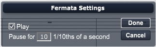

Choose this command to open the Fermata Settings Dialog Box. You can choose this command by double clicking on any Fermata.

About the Fermata Dialog Box
The Fermata Settings dialog box contains two settings: